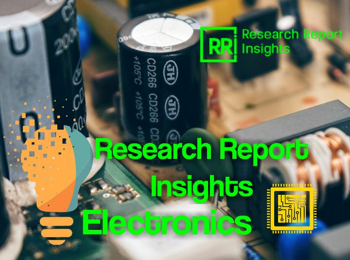

Wireless Charging ICs Market to Witness Soaring Growth

Increasing technological advancement and growing application of wireless charging ICs in the consumer electronics, medical devices and automobile devices is anticipated to have a positive impact on the Wireless Charging ICs market globally.Increasing usage of wireless charging ICs in wearable product such as smart watch, smart glass, electrical shaver, mobile phones and tablets is having a positive impact on the market.Receiver ICs is using as a receiver of wireless charging power.Usage of medium power solution charging ICs are using in different application of automobile charging which is the boosting factors for the Wireless Charging ICs market.
The growing usage of wireless charging ICs in future long range application such as airplane charging, heavy vehicle charging, among others is expected to have a positive impact on the market.In addition, rise in usage of wireless charging technology for medical devices charging such as heart beat monitoring, blood pressure monitoring is another prime factor which is contributing in the positive development of Wireless Charging ICs market.These advancements are fueling the growth of the market.
Based on type, the market has been segmented into transmitter ICs and receiver ICs.Substrates are segmented into organic materials and inorganic materials.Based on components, the market is fragmented into relays, circuit breakers and others.Based on power solution, the Wireless Charging ICs market is segmented into low power solution, medium power solution and high power solution.Based on application, the market is bifurcated into smart phones and tablets, wearable electronics devices, medical devices, automobile devices and others.Furthermore, advance medical components such as blood pressure equipments, heartbeat monitoring watch manufactures are using wireless charging technology.This factor is an opportunity for growth of Wireless Charging ICs market in future.Moreover, manufacturing standardization is limiting many charging ICs equipment manufacturers to enter into the market.This in turn is predicted the limit the growth of Wireless charging IC market in upcoming years.
Geographically, the global Wireless Charging ICs market is categorized into North America, Europe, Asia Pacific, Latin America, Middle East and Africa.The market for wireless charging ICs has been provided in terms of revenue as well as the CAGR for the forecast period of 2016 to 2024.
The key players in the Wireless Charging ICs market have been competitively profiled across the five broad geographic regions.This competitive landscape is inclusive of the various business strategies adopted by these major players and their recent developments in the field of wireless charging ICs.Further, the report includes the market attractiveness analysis of different type, components of wireless charging ICs and insight into the major application area of the wireless charging ICs.
The report also provides assessment of different drivers that is impacting the global market, along with the restraints and opportunities that has also been covered under the scope of this report.For each segment (such as mobile phones and tablets, wearable consumer electronics applications), market dynamics analysis has been provided.All these factors helps in determining different trends that has been impacting the overall market growth.Moreover, after taking into consideration all this factors, an extensive analysis of the region wise growth parameters of Wireless Charging ICs market along with the overall assessment for the forecast period of 2016-2024 has been also been provided within this report.Moreover, patents analysis is also included in the scope of the research.
Some of the major companies involved in the Wireless Charging ICs market include NXP Semiconductors (Netherlands), MediaTek Inc.(Taiwan), Qualcomm Inc.(U.S), Texas Instruments Inc.(U.S), Broadcom Corporation (U.S), Toshiba Corporation (Japan), On Semiconductor (U.S), Linear Technology (U.S) and ROHM Co.Ltd.(Japan) among others.
Wireless Charging ICs been segmented as follows: Global Wireless Charging ICs Market by Type • Transmitter ICs • Receiver ICs Global Wireless Charging ICs Market by Components • Relays • Circuit Breakers • Others Global Wireless Charging ICs Market by Power Solution • Low Power Solution • Medium Power Solution • High Power Solution Global Wireless Charging ICs Market by Power Solution • Smart Phones and Tablets • Wearable Electronic Devices • Medical Devices • Automobile Devices • Others Global Wireless Charging ICs Market by Region • North America o The U.S. o Canada o Mexico • Europe o U.K o Germany o France o Italy o Rest of Europe • Asia Pacific o China o Japan o India o Rest of Asia Pacific • Middle East and Africa o United Arab Emirates o Saudi Arabia o South Africa o Rest of Middle East and Africa • Latin America o Brazil o Rest of Latin America
Share on Facebook Tweet Follow us
Posted On: 2019-03-27T00:00:00
Posted By: Bisvjeet Das


Content Date: 2019-03-27
Download Date: 2021-07-08
Document ID: L0C04DEPW